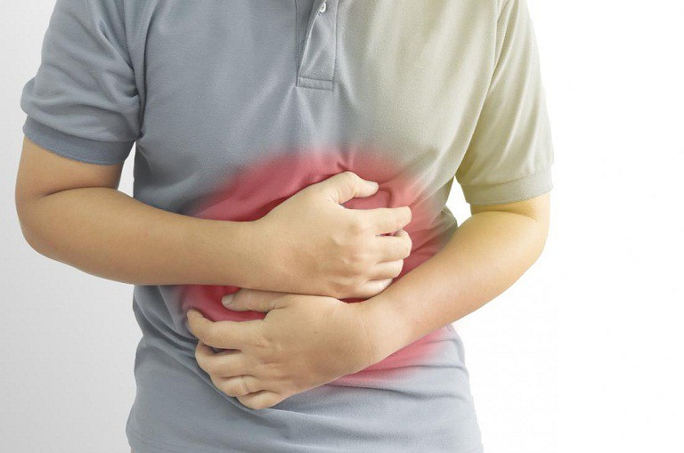
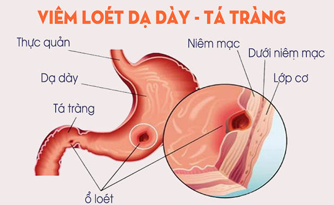

Loét dạ dày - tá tràng là gì?
Viêm loét dạ dày - tá tràng là tổn thương gây loét ở niêm mạc dạ dày hoặc tá tràng (phần đầu ruột non). Vết loét làm thủng lớp niêm mạc để phần mô bên dưới bị lồi lên. Loét dạ dày xảy ra nhiều gấp 4 lần so với loét tá tràng.

Những dấu hiệu và triệu chứng của loét dạ dày - tá tràng
Đau bụng vùng thượng vị
Ợ hơi, ợ chua, nóng rát
Buồn nôn, nôn
Thường xuyên đau bụng không rõ nguyên nhân
Táo bón hoặc đầy bụng khó tiêu
Khi dùng thuốc kháng axit cơn đau sẽ tạm ngưng.
Biến chứng có thể gặp khi loét dạ dày - tá tràng
Xuất huyết tiêu hóa.
Thủng dạ dày - tá tràng.
Hẹp môn vị.
Có thể dẫn đến ung thư
Khi nào cần gặp bác sĩ?
Nếu những triệu chứng trên kéo dài trong vài giờ và thỉnh thoảng mới xảy ra thì bạn có thể tự điều trị bằng cách dùng thuốc kháng axit mua tại hiệu thuốc và cân bằng lại chế độ ăn uống, sinh hoạt. Nếu các triệu chứng xảy ra thường xuyên và thuốc không
mang lại hiệu quả thì bạn nên đến gặp bác sĩ để được kiểm tra và tư vấn. Mỗi người có một cơ địa khác nhau, bạn cần tham khảo ý kiến bác sĩ để có phương án điều trị thích hợp. Chẩn đoán và điều trị sớm sẽ giảm nguy cơ tăng nặng của bệnh và giúp
bạn mau chóng hồi phục sức khỏe.

Nguyên nhân dẫn đến loét dạ dày - tá tràng
Chế độ ăn uống không lành mạnh: Ăn quá nhiều chất kích thích; thức ăn quá chua, quá cay, quá nóng; nhiều chất béo; ăn vội vàng, nhai không kỹ; thường xuyên rối loạn giờ giấc ăn uống.
Nghiện rượu, nghiện thuốc lá.
Do thuốc và các hóa chất: Bụi kim loại, các loại thuốc giảm đau, kháng viêm, corticoid.
Do nhiễm trùng H.pylori (HP)
Do vấn đề thần kinh: Lo lắng, sợ hãi, làm việc quá căng thẳng.
Do nguyên nhân nội tiết: Đái tháo đường, hạ đường huyết, hội chứng cushing, xơ gan
Hội chứng Zollinger-Ellison (tình trạng bài tiết axit quá nhiều, phá hủy màng lót dạ dày).
Có khối u trong dạ dày, tá tràng hoặc lá lách.
Yếu tố làm tăng nguy cơ loét dạ dày - tá tràng
Hút thuốc: Nếu đã bị nhiễm khuẩn H.pylori, việc hút thuốc sẽ làm tăng nguy cơ loét dạ dày - tá tràng.
Uống rượu: Rượu có thể gây kích ứng và làm mòn màng nhầy của dạ dày và kích thích dạ dày tiết nhiều axit.
Phương pháp xét nghiệm và chẩn đoán loét dạ dày - tá tràng
Ngoài khám lâm sàng, xem xét các triệu chứng của bệnh nhân, bác sĩ sẽ áp dụng một số biện pháp sau để chẩn đoán bệnh loét dạ dày - tá tràng:
Nội soi chẩn đoán.
Chụp X-quang đại tràng với chất cản quang.
Phát hiện nhiễm vi khuẩn HP bằng các phương pháp: xét nghiệm huyết thanh (IgG), xét nghiệm hơi thở, xét nghiệm tìm kháng nguyên trong phân.
Nội soi dạ dày tá tràng để lấy mẫu mô sinh thiết.
Phương pháp điều trị loét dạ dày - tá tràng hiệu quả
Việc điều trị loét dạ dày - tá tràng phải dựa vào nguyên nhân gây bệnh, điều trị nhằm mục đích làm lành vết loét và kiểm soát việc bệnh có thể gây biến chứng.
Bác sĩ sẽ kê đơn thuốc để kháng axit trong dạ dày như thuốc đối kháng thụ thể histamin H2, thuốc ức chế bơm proton. Để tạo lớp màng phủ lên vết loét giúp chúng mau lành có thể sử dụng sucralfate.
Nếu nguyên nhân gây bệnh là do dùng thuốc, bác sĩ sẽ khuyên bạn nên ngưng sử dụng loại thuốc đó, giảm liều lượng thuốc hoặc thay đổi một loại khác có tác dụng tương tự mà không ảnh hưởng đến dạ dày tá tràng.
Khi việc thay đổi lối sống, dùng thuốc vẫn không đạt hiệu quả, bạn có thể sẽ được phẫu thuật để điều trị. Sau khi điều trị, bệnh loét dạ dày - tá tràng vẫn có thể tái phát nếu các yếu tố nguy cơ vẫn tồn tại.
Những thói quen sinh hoạt có thể giúp bạn hạn chế diễn tiến của loét dạ dày - tá tràng
Chế độ sinh hoạt:
Tuân thủ theo hướng dẫn của bác sĩ trong việc điều trị.
Không tập thể dục ngay sau khi ăn.
Không hút thuốc lá hoặc dùng thuốc aspirin, thuốc chống viêm không steroid.
Liên hệ ngay với bác sĩ khi nôn ra máu hoặc đi phân có màu đen hay phân lẫn máu.
Thăm khám định kỳ để được theo dõi tình trạng sức khỏe, diễn tiến của bệnh và để bác sĩ tìm hướng điều trị phù hợp trong thời gian tiếp theo nếu bệnh chưa có dấu hiệu thuyên giảm.
Chế độ dinh dưỡng:
Ăn uống và sinh hoạt điều độ, ăn đúng bữa.
Không nên ăn thức ăn nhiều gia vị.
Hạn chế ăn các chất dễ gây kích thích dạ dày như thức ăn chua, cay nóng; thức uống chứa caffeine, trà, rượu.
Hạn chế ăn đậu nành và các chế phẩm từ đậu nành.
Nên tránh một vài loại trái cây và rau quả đối với người có nguy cơ mắc bệnh như: súp lơ xanh, bắp cải, dưa chuột, dưa hấu, dứa, đu đủ xanh.
Nên ăn các loại thức ăn như: tinh bột, các loại hạt, chuối xanh, sữa, trứng, nghệ, mật ong.